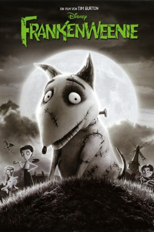

 
 IMDB-Wertung: 7.0 / 10
IMDB-Wertung: 7.0 / 10  Tomatometer: 87
Tomatometer: 87  Metascore:
Metascore: 
Victor und sein Hund Sparky sind die besten Freunde und einfach unzertrennlich - bis Victor seinen geliebten Vierbeiner unerwartet durch einen Unfall verliert. Inspiriert durch seinen Naturwissenschaftslehrer Mr. Rzykruski und dessen kuriose Versuche, kommt Victor eine bahnbrechende Idee: Durch die Macht der experimentellen Wissenschaft holt er Sparky zurück ins Leben - ganz in Frankenstein Manier, aber mit einigen kleinen Besonderheiten. Seine selbst geschaffene Kreation versucht er anschließend zu Hause zu verstecken und geheim zu halten, doch Sparky büchst aus und wird natürlich von Victors Mitschülern entdeckt. Begeistert von der Idee ihre geliebten Haustiere wieder lebendig zu machen, erlebt bald die gesamte Stadt die monströsen, aus der Art schlagenden Auswirkungen ihrer unglaublichen Experimente.
Jahr: 2012
Dauer: 86 Minuten
FSK: 12
Land: USA Studio: Walt Disney PicturesTonspuren: DTS - ,
Untertitel:
Auflösung: 1080p (1920x1040) Größe: 4771 MB
Genre: Horror, Sci-Fi, Komödie, Animation/Trick, Familie
Regisseur:  Tim Burton
Tim Burton
Drehbuch: Malcolm Marmorstein
Soundtrack:
Darsteller:
Datei: X:\Kinder Filme (A-F)\Frankenweenie (2012, FSK12, 1920x1040) 3D.mkv seit 30.05.2016
Festplatte: Kinder-Filme+Trick
 Es gibt insgesamt 68 Filme in der Gruppe 'Kinder Filme (A-F)'
Es gibt insgesamt 68 Filme in der Gruppe 'Kinder Filme (A-F)'